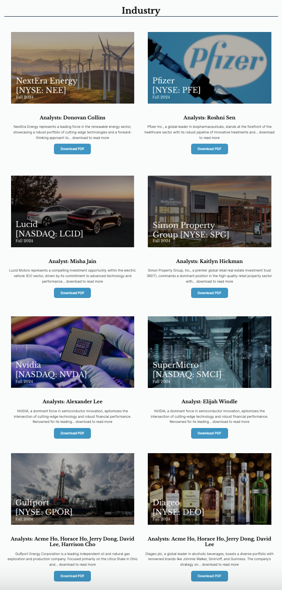

Final Design (Wordpress)
After finalizing our design for all our pages, I worked on replicating our insights page on Figma to Wordpress with Ethan.


I first joined UC Berkeley's Innovative Design in Fall 2024 as a member of their Gold Web Team. As our client project for the semester, we created a new website for an on-campus organization: Finance Excellence Development Society (FEDS).
FEDS at UC Berkeley aims to create a welcoming, inclusive, and dynamic platform for students from all backgrounds to explore and grow in the field of finance. To further this mission, they need a comprehensive and user-friendly website that embodies their values and fosters engagement.
Photo from @innodatcal on Instagram
Using the 8-fold wireframe technique, I created lo-fi sketches to illustrate the basic website structure and flow. I wanted the website to include all that the club has to offer without being too wordy by incorporating pop up windows and more images/graphics.
With Minjae, I designed the basic structure of the home and about us page on Figma.
Jubeen and I brainstormed possible color schemes and fonts. Since FEDS is a UC Berkeley organization, we wanted to utilize blue. We also adjusted spacing around images and text sizes on the pages to clearly separate different sections.
Emi, Kimmy, and I designed the Services Page on laptop and mobile view using our agreed upon final design fonts and colors. We wanted to create an interactive click-through page, so users can navigate through services with ease.
After finalizing our design for all our pages, I worked on replicating our insights page on Figma to Wordpress with Ethan.